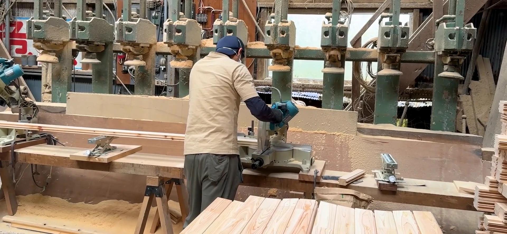
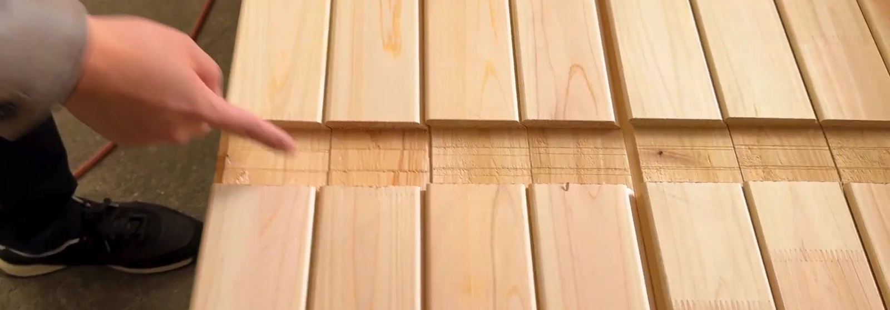
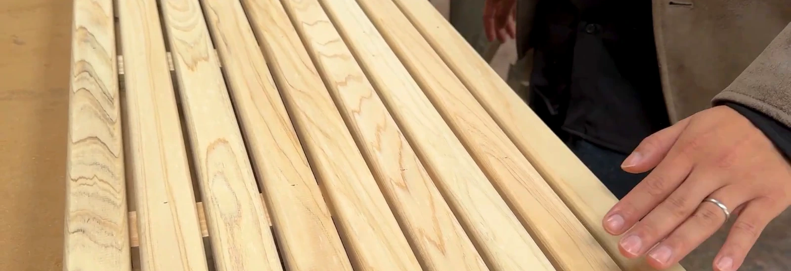

Rink / MEET THE MAKERS
楽しみを、
つくる手。
長く楽しむ一台を、
工場の仕事から。

01 / SHAPE THE WOOD
溝ひとつにも、
仕事がある。
材を整え、必要なかたちへ。
機械で溝を加工し、その仕上がりを手元で確かめる。
一台になる前の部材にも、工程を重ねていきます。
組み合わさる、
その前に。
加工した部材に刻まれた溝。組み立てたあとには見えにくくなる、一台を支える細部です。

02 / FINISH WITH CARE
触れるところまで、
丁寧に。
ベンチに使う材の角を整える。
塗装の工程で、部材を仕上げる。
それぞれの役割に合わせた仕事があります。

AT THE WORKSHOP
仕上げも、
一つずつ。
塗装の工程で、部材の表面を整える。
使う場所や役割に合わせて、仕上げていきます。
03 / CHECK BEFORE DELIVERY
届ける前に、
確かめる。
最後も、人の目と手で。
扉にメジャーを当て、寸法を確認する。
届ける一台に、最後まで向き合います。
ORIGINAL STRUCTURE
つなぎ目に、
Rinkの工夫。
丸い側壁の板を、どうつなぐか。
継ぎ手の形を、実物の映像でたどります。

Rink SAUNA ご相談窓口
その場所に、
つづく楽しみを。
設置場所や使い方から、一緒に考えます。